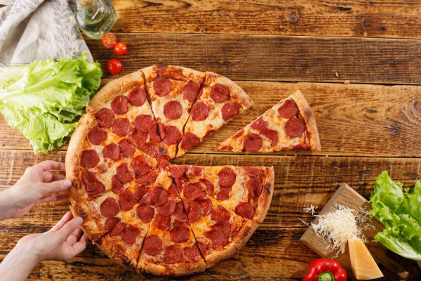

Odin Recipes
Pepperoni Pizza

Description
Quick, Easy and Delicious! Pizza crust and tomato sauce has never been easier-and this recipe for pepperoni pizza produces a delicious classic!
Ingredients
- 12 ounce of tomato paste
- 1 teaspoon dried oregano
- half teaspoon dried basil
- half teaspoon garlic powder
- half teaspoon onion powder
- half teaspoon sugar
- half teaspoon salt
- half teaspoon black pepper
- 3 cups all-purpose flour
- 1 cups of very warm water
- half a cup of oil
Steps
- For sauce: Combine all sauce ingredients with 1/2 cup water in a medium bowl; set aside for flavors to develop while making crust. Freeze remaining paste .
- For crusts: Combine 2 cups of flour with the dry yeast, sugar and salt. Add the water and oil and mix until well blended (about 1 minute). Gradually add enough remaining flour slowly, until a soft, sticky dough ball is formed.
- Knead for about 4 minutes, on a floured surface, until dough is smooth and elastic. Add more flour, if needed. (If using RapidRise® Yeast, let dough rest, covered, for 10 minutes.)
- Divide dough in half. Pat each half (with floured hands) into a 12-inch greased pizza pan OR roll dough to fit pans.
- For pizzas: Preheat oven to 425 degrees F. Top crusts with sauce, pepperoni and cheese.
- Bake for 18 to 20 minutes until crusts are browned and cheese is bubbly. For best results, rotate pizza pans between top and bottom oven racks halfway through baking.
Return to Homepage